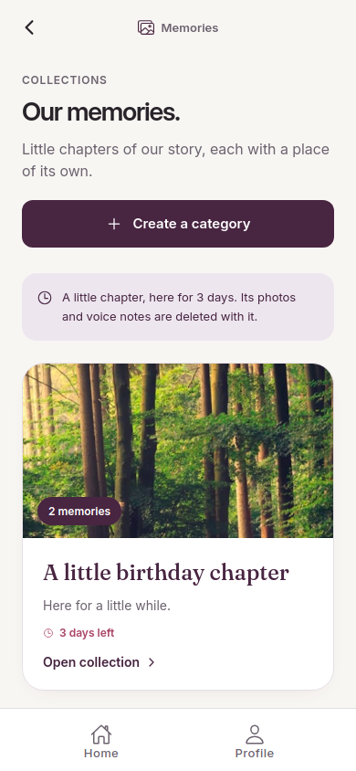
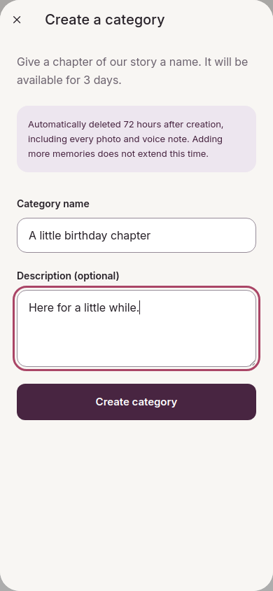
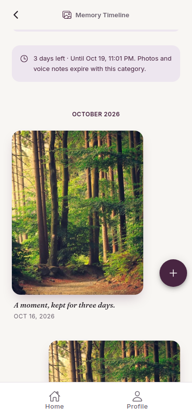
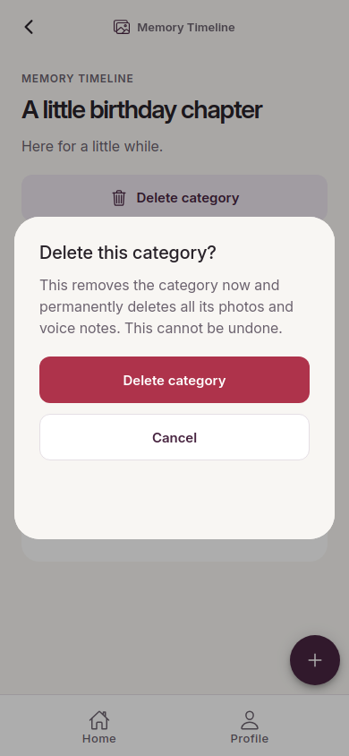
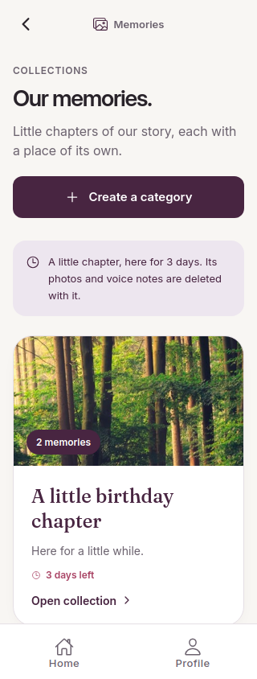
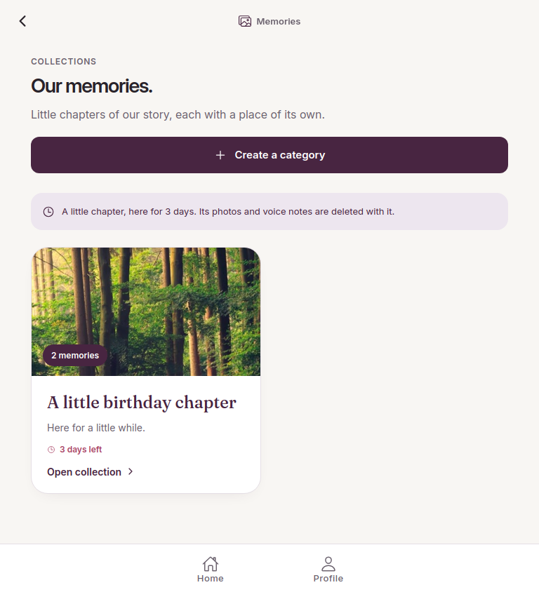
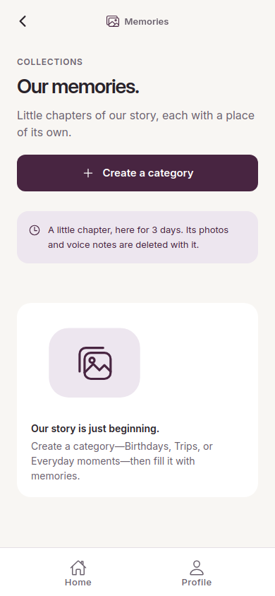

Categories expire 72 hours after creation. Photos and voice notes are stored privately in Cloudflare R2 and removed with the category. Existing memories are intended for erasure, with no migration. Live storage activation and old-file deletion still require backend credentials.
These screenshots use synthetic accounts/media, an isolated local database and a local S3-compatible test server.
Implementation and verification · Browser results · Storage setup






